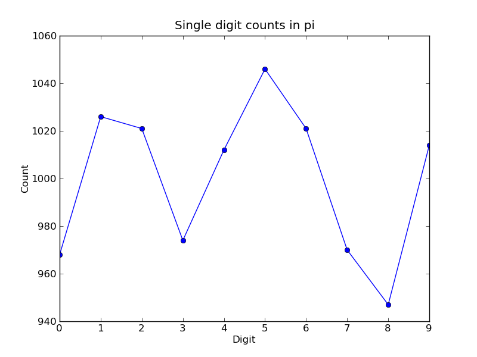

Note
This documentation is for a development version of IPython. There may be significant differences from the latest stable release.
Parallel examples¶
In this section we describe two more involved examples of using an IPython cluster to perform a parallel computation. We will be doing some plotting, so we start IPython with matplotlib integration by typing:
ipython --matplotlib
at the system command line. Or you can enable matplotlib integration at any point with:
In [1]: %matplotlib
150 million digits of pi¶
In this example we would like to study the distribution of digits in the number pi (in base 10). While it is not known if pi is a normal number (a number is normal in base 10 if 0-9 occur with equal likelihood) numerical investigations suggest that it is. We will begin with a serial calculation on 10,000 digits of pi and then perform a parallel calculation involving 150 million digits.
In both the serial and parallel calculation we will be using functions defined in the pidigits.py file, which is available in the examples/parallel directory of the IPython source distribution. These functions provide basic facilities for working with the digits of pi and can be loaded into IPython by putting pidigits.py in your current working directory and then doing:
In [1]: run pidigits.py
Serial calculation¶
For the serial calculation, we will use SymPy to calculate 10,000 digits of pi and then look at the frequencies of the digits 0-9. Out of 10,000 digits, we expect each digit to occur 1,000 times. While SymPy is capable of calculating many more digits of pi, our purpose here is to set the stage for the much larger parallel calculation.
In this example, we use two functions from pidigits.py: one_digit_freqs() (which calculates how many times each digit occurs) and plot_one_digit_freqs() (which uses Matplotlib to plot the result). Here is an interactive IPython session that uses these functions with SymPy:
In [7]: import sympy
In [8]: pi = sympy.pi.evalf(40)
In [9]: pi
Out[9]: 3.141592653589793238462643383279502884197
In [10]: pi = sympy.pi.evalf(10000)
In [11]: digits = (d for d in str(pi)[2:]) # create a sequence of digits
In [13]: freqs = one_digit_freqs(digits)
In [14]: plot_one_digit_freqs(freqs)
Out[14]: [<matplotlib.lines.Line2D object at 0x18a55290>]
The resulting plot of the single digit counts shows that each digit occurs approximately 1,000 times, but that with only 10,000 digits the statistical fluctuations are still rather large:
It is clear that to reduce the relative fluctuations in the counts, we need to look at many more digits of pi. That brings us to the parallel calculation.
Parallel calculation¶
Calculating many digits of pi is a challenging computational problem in itself. Because we want to focus on the distribution of digits in this example, we will use pre-computed digit of pi from the website of Professor Yasumasa Kanada at the University of Tokyo (http://www.super-computing.org). These digits come in a set of text files (ftp://pi.super-computing.org/.2/pi200m/) that each have 10 million digits of pi.
For the parallel calculation, we have copied these files to the local hard drives of the compute nodes. A total of 15 of these files will be used, for a total of 150 million digits of pi. To make things a little more interesting we will calculate the frequencies of all 2 digits sequences (00-99) and then plot the result using a 2D matrix in Matplotlib.
The overall idea of the calculation is simple: each IPython engine will compute the two digit counts for the digits in a single file. Then in a final step the counts from each engine will be added up. To perform this calculation, we will need two top-level functions from pidigits.py:
"""
d = txt_file_to_digits(filename)
freqs = one_digit_freqs(d)
return freqs
def compute_two_digit_freqs(filename):
"""
Read digits of pi from a file and compute the 2 digit frequencies.
"""
d = txt_file_to_digits(filename)
freqs = two_digit_freqs(d)
return freqs
def reduce_freqs(freqlist):
"""
Add up a list of freq counts to get the total counts.
We will also use the plot_two_digit_freqs() function to plot the results. The code to run this calculation in parallel is contained in examples/parallel/parallelpi.py. This code can be run in parallel using IPython by following these steps:
- Use ipcluster to start 15 engines. We used 16 cores of an SGE linux cluster (1 controller + 15 engines).
- With the file parallelpi.py in your current working directory, open up IPython, enable matplotlib, and type run parallelpi.py. This will download the pi files via ftp the first time you run it, if they are not present in the Engines’ working directory.
When run on our 16 cores, we observe a speedup of 14.2x. This is slightly less than linear scaling (16x) because the controller is also running on one of the cores.
To emphasize the interactive nature of IPython, we now show how the calculation can also be run by simply typing the commands from parallelpi.py interactively into IPython:
In [1]: from IPython.parallel import Client
# The Client allows us to use the engines interactively.
# We simply pass Client the name of the cluster profile we
# are using.
In [2]: c = Client(profile='mycluster')
In [3]: v = c[:]
In [3]: c.ids
Out[3]: [0, 1, 2, 3, 4, 5, 6, 7, 8, 9, 10, 11, 12, 13, 14]
In [4]: run pidigits.py
In [5]: filestring = 'pi200m.ascii.%(i)02dof20'
# Create the list of files to process.
In [6]: files = [filestring % {'i':i} for i in range(1,16)]
In [7]: files
Out[7]:
['pi200m.ascii.01of20',
'pi200m.ascii.02of20',
'pi200m.ascii.03of20',
'pi200m.ascii.04of20',
'pi200m.ascii.05of20',
'pi200m.ascii.06of20',
'pi200m.ascii.07of20',
'pi200m.ascii.08of20',
'pi200m.ascii.09of20',
'pi200m.ascii.10of20',
'pi200m.ascii.11of20',
'pi200m.ascii.12of20',
'pi200m.ascii.13of20',
'pi200m.ascii.14of20',
'pi200m.ascii.15of20']
# download the data files if they don't already exist:
In [8]: v.map(fetch_pi_file, files)
# This is the parallel calculation using the Client.map method
# which applies compute_two_digit_freqs to each file in files in parallel.
In [9]: freqs_all = v.map(compute_two_digit_freqs, files)
# Add up the frequencies from each engine.
In [10]: freqs = reduce_freqs(freqs_all)
In [11]: plot_two_digit_freqs(freqs)
Out[11]: <matplotlib.image.AxesImage object at 0x18beb110>
In [12]: plt.title('2 digit counts of 150m digits of pi')
Out[12]: <matplotlib.text.Text object at 0x18d1f9b0>
The resulting plot generated by Matplotlib is shown below. The colors indicate which two digit sequences are more (red) or less (blue) likely to occur in the first 150 million digits of pi. We clearly see that the sequence “41” is most likely and that “06” and “07” are least likely. Further analysis would show that the relative size of the statistical fluctuations have decreased compared to the 10,000 digit calculation.

Conclusion¶
To conclude these examples, we summarize the key features of IPython’s parallel architecture that have been demonstrated:
- Serial code can be parallelized often with only a few extra lines of code. We have used the DirectView and LoadBalancedView classes for this purpose.
- The resulting parallel code can be run without ever leaving the IPython’s interactive shell.
- Any data computed in parallel can be explored interactively through visualization or further numerical calculations.
- We have run these examples on a cluster running RHEL 5 and Sun GridEngine. IPython’s built in support for SGE (and other batch systems) makes it easy to get started with IPython’s parallel capabilities.